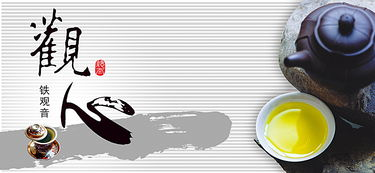

茶道的故事
tea culture
茶道文化
茶文化是一种“中介”文化，以茶为载体，以能体现东方国家的传统思想道德、
人文精神为宗旨，包括有关茶的礼仪、风俗、茶法、茶规、茶技、茶艺、历史典故、民间
传说以及文学艺术、辞曲歌赋等。茶文化是一种“综合”文化，涉及到建筑、音乐、舞蹈、
绘画、戏曲、服饰、饮食、医药等诸多文化领域。茶道文化源于中国，南宋时期传入日本
和朝鲜，元朝时在中国衰落。 现如今已，茶道文化在日本流行并发扬光大，成为世界茶道
文化的典型代表。
禅宗渊源
僧人饮茶历史悠久，因茶有“三德”，利于丛林修持，由“茶之德”生发出禅宗茶
道。 僧人种茶、制茶、饮茶并研制名茶，为中国茶叶生产的发展、茶学的发展、茶道的形
成立下不世之功劳。日本茶道基本上归属禅宗茶道，源于中国但青出于蓝而胜于蓝。

茶道礼仪
泡茶的五大茶礼分别为酒满敬人，茶满欺人；先客后主，司炉最末；喝茶皱眉，
表示弃嫌；新客换茶；及时添加茶水，泡茶是一门技术，同时也是一种生活态度，正确的方
式会令人舒服，因此在品茶、泡茶的过程中，我们需要注重礼仪的得当性。中国的茶桌上始
终遵守着“尊老爱幼”的传统。在第一次给客人斟茶时，要尊老卑幼，第二次的时候就可以按
照顺序来斟茶了。同时在这一过程中要注意的是，主人要到客人前面道声“请用茶”，客人则
回应“谢谢”、“莫客气”。如果是客人较多的话，则不便收回茶杯，放于客人桌前就可以了。
客人在接受主人斟茶的时候要有所感谢，即长辈用食指在桌上轻弹两下，小辈平辈的用食、
中指在桌面轻弹两次。同时注意及时添加茶水，茶水以七分满为佳，不宜太满。